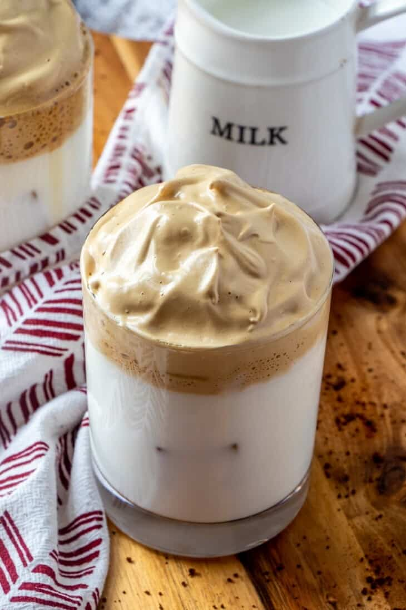

DALGONA COFFEE ☕

INGREDIENTS:
- 1 1/2 tablespoons instant coffee granules
- 4 tablespoons sugar
- 3 tablespoons water
- 1 cup milk
INSTRUCTIONS:
Step 1 In a bowl, combine coffee granules, sugar, and water.
Step 2 Using an electric mixer, beat for about 5 to 7 minutes or until stiff peaks form.
Step 3 Fill two serving glasses with ice cubes up to 3/4 full. Pour milk enough to cover the ice.
Step 4 Spoon coffee foam on top of milk and stir. Serve with a straw.
Step 5 Serve. Share and enjoy!